Pranay Seshadri
I am a Research Fellow in the Department of Mathematics (Statistics Section) at Imperial College London, working under Andrew Duncan. My research is focused on designing better rotating blades--that appear in jet engines, gas turbines, wind turbines and electric fans--using a variety of statistical methods. These include:
- Gaussian processes with bespoke physics-informed kernels.
- Machine learning algorithms for data-driven dimension reduction.
- Polynomial methods for uncertainty quantification and data science.
- How do we compute aerothermal quantities (temperatures, pressures, efficiencies) from sparse measurements?
- How do we develop new physics-based rules for blade design and manfacturing (nominal and tolerances)?
- How do we speed up existing numerical simulation workflows (CFD, FEM) while offering uncertainty estimates?
- How can virtual reality alter the way we design and interact with our computational designs?
I am the lead developer and founder of Effective Quadratures. I am also the Group Leader in Aeronautics in the Data-Centric Engineering Programme at The Alan Turing Institute.


Publications and Pre-prints
See my Google scholar page for a complete listing of all papers. Below are some select pre-prints and journal articles.| 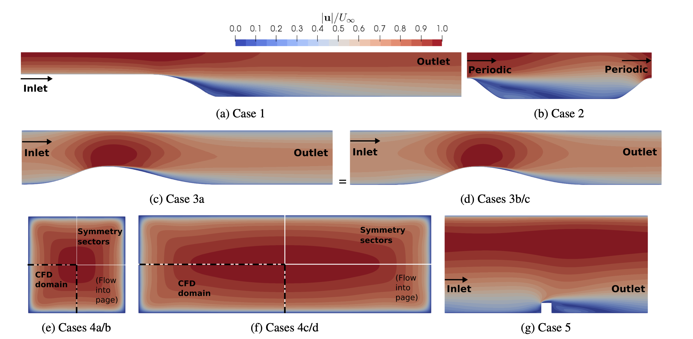 |
Data-driven turbulence modelling with Mondrian forests
In this work, we explore the suitability of Mondrian forests (MF’s) for data-driven turbulence modelling. MF’s are claimed to possess many of the advantages of the commonly used random forest (RF) machine learning algorithm, whilst offering principled uncertainty estimates. On a manufactured test case these claims are substantiated, providing feature selection is first performed to remove irrelevant features from the training data. A number of flows at several Reynolds numbers are used for training and testing. Irrelevant features are not found to be a problem here. MF predictions are found to be superior to those obtained from a commonly used linear eddy viscosity model. Shapley values, borrowed from game theory, are used to interpret the MF predictions. Ashley Scillitoe, Pranay Seshadri, Mark Girolami(under review) Journal of Computational Physics, 2020. pre-print | code |
| 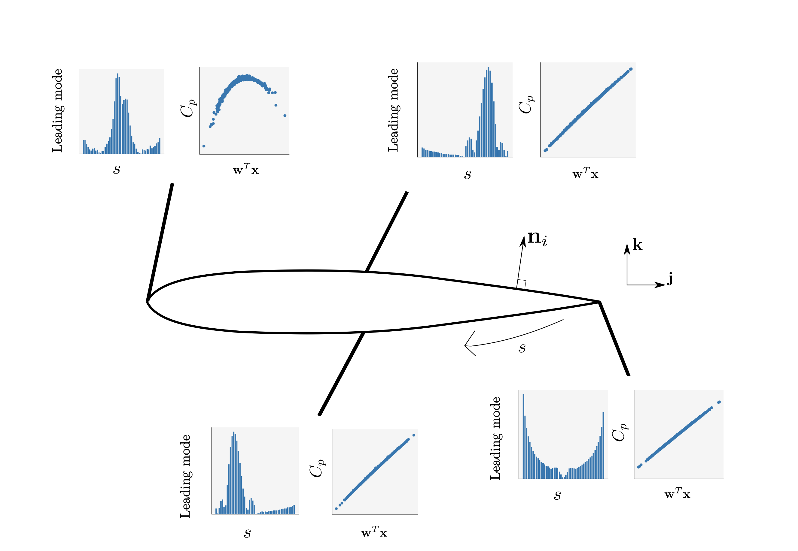 |
Embedded ridge approximations
Many quantities of interest (qois) arising from differential-equation-centric models can be resolved into functions of scalar fields. These scalar fields are evaluated at each node within a discretized computational domain. In certain scenarios, the field at a certain node is only weakly influenced by far-field perturbations; it is likely to be strongly governed by local perturbations, which in turn can be caused by uncertainties in the geometry. One can interpret this as a strong anisotropy of the field with respect to uncertainties in prescribed inputs. We exploit this notion of localized scalar-field influence for approximating global qois, which often are integrals of certain field quantities. Chu Yui Wong, Pranay Seshadri, Mark Girolami, Geoffrey Parks(under review) SIAM/ASA Journal on Uncertainty Quantification, 2020. pre-print | code |
| 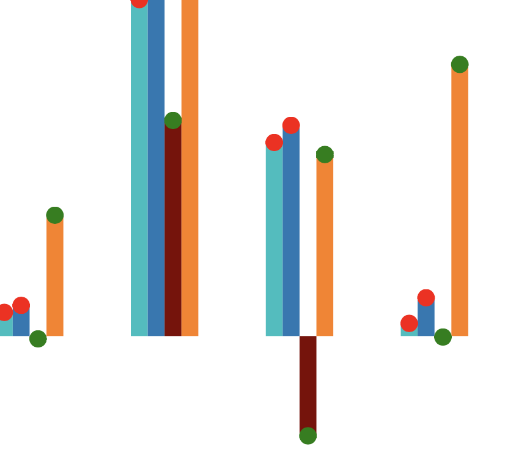 |
Extremum sensitivity analysis with polynomial approximations
We study previously derived metrics for extracting higher-order sensitivity information and find that they can be used only in restricted cases. This motivates the development of a variance reduction index: a metric computed at function extrema to ascertain which variables are important for aiding a function either its minima or maxima. Chu Yui Wong, Pranay Seshadri, Geoffrey Parks(under review) Reliability Engineering and System Safety, 2020. pre-print |
| 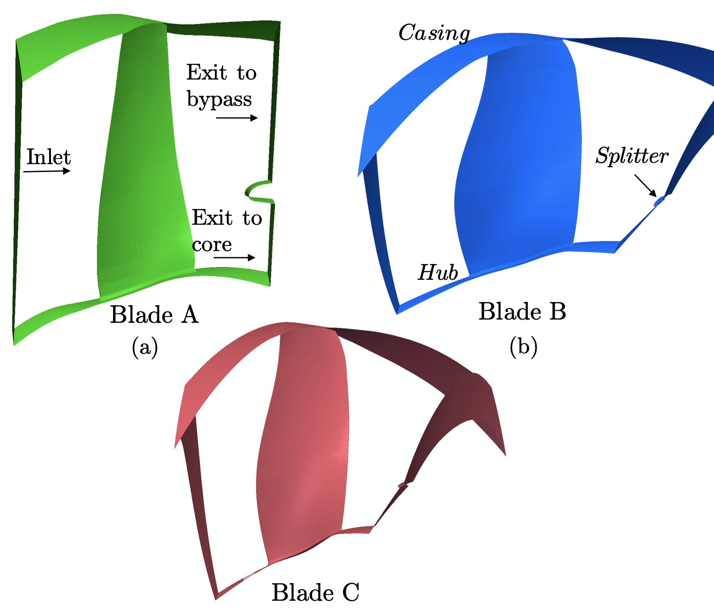 |
Multi-point fan design via dimension reduction
Motivated by the idea of turbomachinery active subspace performance maps, this paper studies dimension reduction in turbomachinery 3D CFD simulations. First, we show that these subspaces exist across different blades—under the same parametrization—largely independent of their Mach number or Reynolds number. This is demonstrated via a numerical study on three different blades. Then, in an attempt to reduce the computational cost of identifying a suitable dimension reducing subspace, we examine statistical sufficient dimension reduction methods, and polynomial variable projection. Pranay Seshadri, Shaowu Yuchi, Shahrokh Shahpar, Geoffrey Parks(under review) The Aeronautical Journal, 2020. pre-print | data |
| 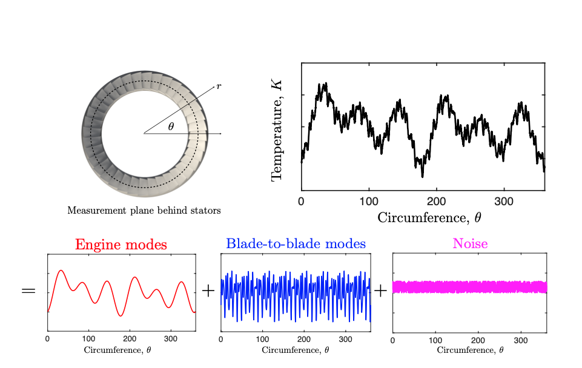 |
Spatial flow-field estimation: area-averaging
In this paper, we develop a regularized multivariate linear regression framework for studying engine temperature measurements. As part of this investigation, we study the temperature measurements obtained from the same axial plane across five different engines yielding a total of 82 data-sets. The five different engines have similar architectures and therefore similar temperature spatial harmonics are expected. Our problem is to estimate the spatial field in engine temperature given a few measurements obtained from thermocouples positioned on a set of rakes. Pranay Seshadri, Duncan Simpson, George Thorne, Andrew Duncan, Geoffrey ParksASME Journal of Turbomachinery, 2019. pre-print | paper |
| 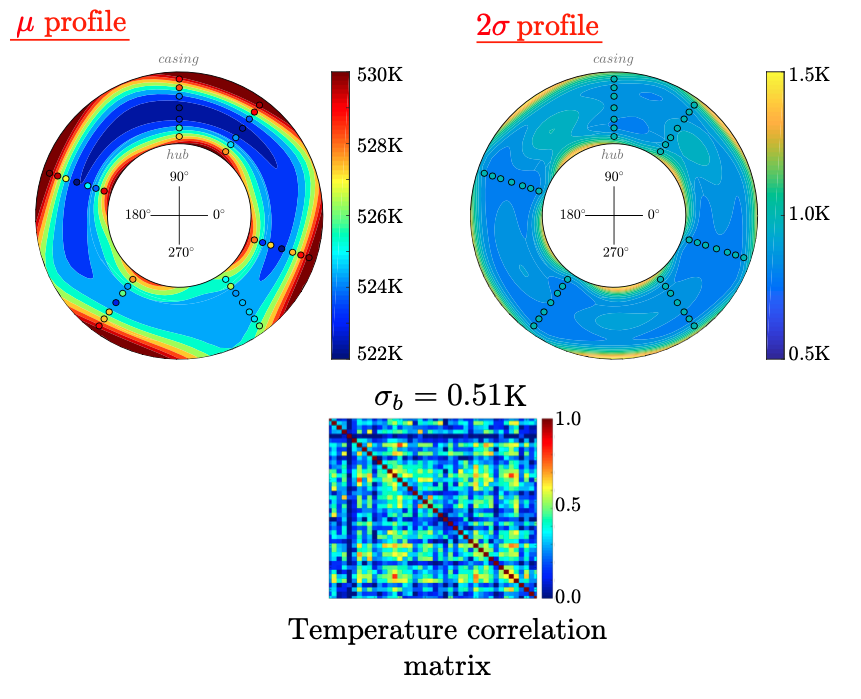 |
Spatial flow-field estimation: uncertainty assessments
In this second part of our two-part paper, we provide a detailed, frequentist framework for propagating uncertainties within our multivariate linear least squares model. This permits us to quantify the impact of uncertainties in thermodynamic measurements--arising from calibrations and the data acquisition system--and the correlations therein, along with uncertainties in probe positions. Pranay Seshadri, Andrew Duncan, Duncan Simpson, George Thorne, Geoffrey ParksASME Journal of Turbomachinery, 2019. pre-print | paper |
| 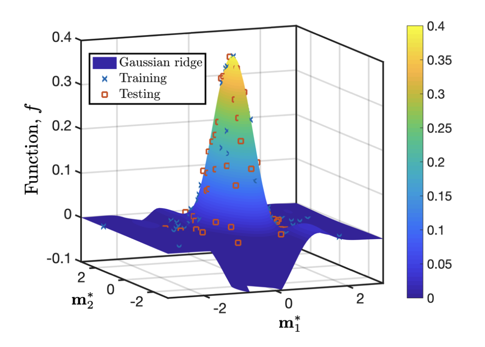 |
Dimension reduction via Gaussian ridge functions
We present a new algorithm that approximates what we call a Gaussian ridge function--the posterior mean of a Gaussian process on a dimension-reducing subspace--suitable for both regression and approximation problems. To compute this subspace we develop an iterative algorithm that optimizes over the Stiefel manifold to compute the subspace, followed by an optimization of the hyperparameters of the Gaussian process. Pranay Seshadri, Shaowu Yuchi, Geoffrey ParksSIAM/ASA Journal on Uncertainty Quantification, 2019. pre-print | paper | code |
| 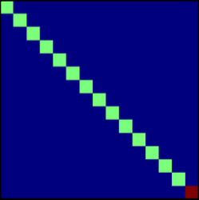 |
Quadrature strategies for polynomial approximations
Finding suitable points for multivariate polynomial interpolation and approximation is a challenging task. Yet, despite this challenge, there has been tremendous research dedicated to this singular cause. In this paper, we begin by reviewing classical methods for finding suitable quadrature points for polynomial approximation in both the univariate and multivariate setting. Then, we categorize recent advances into those that propose a new sampling approach, and those centered on an optimization strategy. Pranay Seshadri, Gianluca Iaccarino, Tiziano GhisuSpringer, Cham. Uncertainty Modeling for Engineering Applications, 2019. pre-print | paper | code |

|
Turbomachinery active subspace performance maps
Turbomachinery active subspace performance maps are two-dimensional (2D) contour plots that illustrate the variation of key flow performance metrics with different blade designs. While such maps are easy to construct for design parameterizations with two variables, in this paper, maps will be generated for a fan blade with twenty-five design variables. Turbomachinery active subspace performance maps combine active subspaces—a new set of ideas for dimension reduction—with fundamental turbomachinery aerodynamics and design spaces. Pranay Seshadri, Shahrokh Shahpar, Paul Constantine, Geoffrey Parks, Mike AdamsASME Journal of Turbomachinery, 2018. pre-print | paper | code |
| 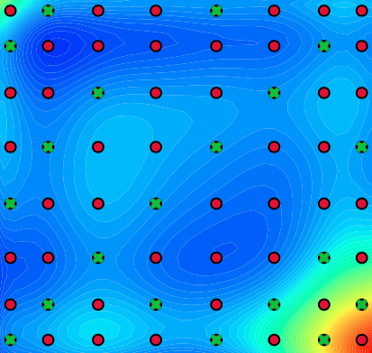 |
Effectively subsampled quadratures
This paper proposes a new deterministic sampling strategy for constructing polynomial chaos approximations for expensive physics simulation models. The proposed approach, effectively subsampled quadratures, involves sparsely subsampling an existing tensor grid using QR column pivoting. For polynomial interpolation using hyperbolic or total order sets, we then solve the following square least squares problem. For polynomial approximation, we use a column pruning heuristic that removes columns based on the highest total orders and then solves the tall least squares problem. Pranay Seshadri, Akil Narayan, Sankaran MahadevanSIAM/ASA Journal on Uncertainty Quantification, 2017. pre-print | paper | code |
| 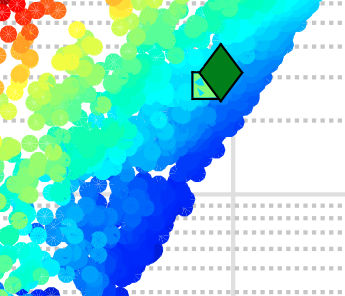 |
Density matching for optimization under uncertainty
We propose a metric for OUU that measures the distance between a designer-specified probability density function of the system response (the target) and the system response’s density function at a given design. We study an OUU formulation that minimizes this distance metric over all designs. We discretize the objective function with numerical quadrature, and we approximate the response density function with a Gaussian kernel density estimate. Pranay Seshadri, Paul Constantine, Gianluca Iaccarino, Geoffrey ParksComputer Methods in Applied Mechanics & Engineering, 2016. pre-print | paper | code |
| 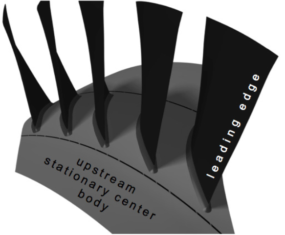 |
Leakage uncertainties in NASA Rotor 37
This paper revisits an old problem of validating computational fluid dynamics simulations with experiments in turbomachinery. The case considered here is NASA rotor 37. Prior computational fluid dynamics studies of this blade have been unable to predict a total pressure deficit at the hub as observed in the experiments. A possible explanation for this discrepancy is a small hub leakage flow emanating fore of the leading edge, between the forward stationary center body and the rotating disk. In this work, a large-scale high-fidelity uncertainty quantification study is carried out to investigate whether this indeed was the case. Pranay Seshadri, Shahrokh Shahpar, Geoffrey ParksAIAA Journal of Propulsion and Power, 2015. pre-print | paper |
| 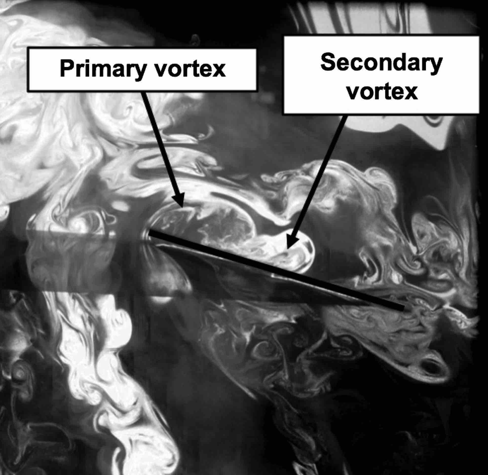 |
Force and flow-field measurements on a rotating and flapping blade
Experimental studies were conducted by flapping a rigid rectangular wing with a mechanism that is capable of emulating complex insect wing kinematics, including figure-of-eight motions, in order to explore the fundamental unsteady flow on a flapping wing at micro-air-vehicle-scale Reynolds numbers. Force and moment measurements were obtained from a miniature six-component force transducer installed at the wing root. The wing was flapped in air and vacuum at the same frequency, and wing kinematics, and the resultant forces, were subtracted in order to obtain the pure aerodynamic forces. Pranay Seshadri, Moble Benedict, Inderjit ChopraAIAA Journal of Aircraft, 2013. paper |
| 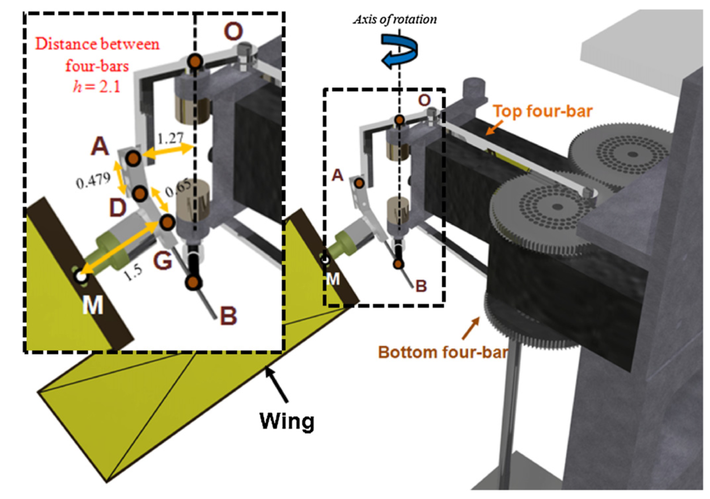 |
Novel four-bar mechanism for rotation and flapping motions
A novel dual-differential four-bar flapping mechanism that can accurately emulate insect wing kinematics in all three degrees of freedom (translation, rotation and stroke plane deviation) is developed. The mechanism is specifically designed to be simple and scalable such that it can be utilized on an insect-based flapping wing micro air vehicle. Kinematic formulations for the wing stroke position, pitch angle and coning angle for this model are derived from first principles and compared with a 3D simulation. Pranay Seshadri, Moble Benedict, Inderjit ChopraBioinspiration & Biomimetics, 2012. paper |